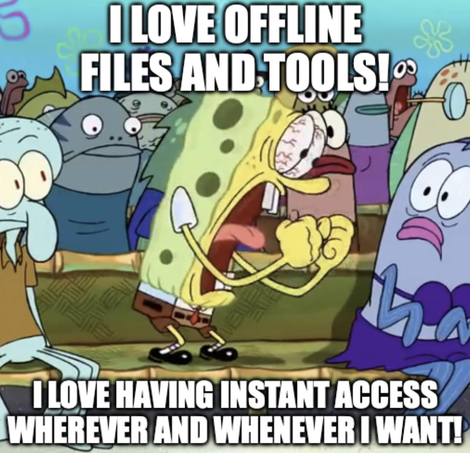

📅 01-Sep-2025
Article first published in Dev.to on 01/Sep/2025
I ❤️ Offline

Let me start by saying this blogpost doesn’t come from a place of hate. I don’t hate online tools, I don’t hate media streaming. Many times they’re just more convenient, and I use them a lot (I even had a Stadia back in the day).
But I just love not needing it. That feeling of independence, of not having to ask a server for permission to access your own stuff, is why I went back to buy physical media.
It’s faster to access, it doesn’t require having a power and memory hungry program like a modern web browser constantly open, and it works even when I’m on a plane, or somewhere with spotty or slow internet.
The main problem is that you need to know what you'll need in advance.
However, sometimes what you need is mainly online, or simply my terminally online brain struggles to conceive that you don't need a web browser for that. So it always feels really nice to discover new tools that allow you to access some resources offline.
Here are some of my favourites.
Notes and TODOs
The weird thing is that we accepted online-first or even online-only note taking apps.
I used to be a huge fan of Trello and later Notion, but their online-first nature ended up getting in the way.
Nowadays I just use a very simple system of templated Markdown files. I'm even considering trying out Org-mode (outside emacs, I'm a vim type of guy).
Documentation
Man pages
Good old man pages. That's it. They nailed it back in the 70s.
The navigation could be improved, but they're fast and exhaustive. They were created in a time before the Internet after all (why, they even predate C!)
Depending on your platform, there might be GUI apps to navigate them a bit more comfortably, like Yelp on Linux, or Man Reader on macOS, but TUI pagers like less or even vim do a good enough job imho.
I also really like the cppman project, which allows you to download and navigate cppreference in a similar manner.
Kiwix
I recently discovered Kiwix, which is meant for offline Wikipedia access but also has a bunch of documentation for APIs, tools and languages like Vulkan, CMake, Python, etc.
You can even download the whole of StackOverflow (80GB at the time of writing).
macOS' 1st party apps
If you're on macOS, Apple’s own Developer app allows you to download the excellent educational videos from past WWDC.
Xcode also includes an offline version of all the Apple frameworks’ documentation.
Blogs & Websites
I use GoodLinks to save and synchronise articles across all my devices using iCloud.
It’s a paid app but it’s absolutely worth it.
I used to be one of the dozens of Pocket fans, until Mozilla killed it. Same with Omnivore. 🥀🪦
For other pages that might not translate so well to the “Reader View”, I use the “Reading List” in Safari (or lately on Orion). It allows you to download the whole page as it is.
I'm not sure if there's a similar feature for Chromium or Firefox, but you can always print the page as a PDF!